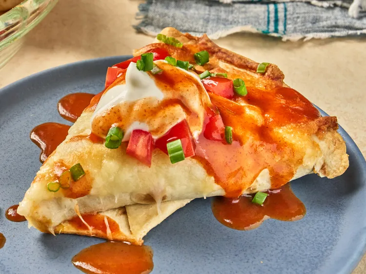

Tortilla Wrap Taco Pizza

Description
This tortilla wrap taco pizza gives Taco Bell's Mexican Pizza vibes. It begins with a quickly-
sauteed mix of beans and ground beef. Filled tortilla halves are folded to look like pizza
slices, and baked together in a round pan.
Ingredients
- 1 pound ground beef
- 1 cup cooked beans, drained
- 1 (1 ounce) packet taco seasoning
- 1/2 cup water
- 4 (8 inch) tortillas
- 2 tablespoons sliced green onion
- 2 cups shredded Mexican cheese
- 1 Roma tomato, finely chopped
- sour cream and taco sauce for serving
Steps
- Preheat the oven to 375 degrees F (190 degrees C).
- Heat a nonstick skillet over medium-high heat. Add beef and cook, crumbling
with a spoon, until well browned and crumbled, 7 to 10 minutes. Stir in beans,
taco seasoning, and 1/2 cup water. Cook until well combined and remove from
heat.
- Cut each tortilla in half. Place about 1/2 cup beef mixture onto the center of each
tortilla half and top with 1 tablespoon cheese. Fold each end of the tortilla over
the filling so that it creates a triangular shape with a point at the bottom. Repeat
with remaining tortillas and filling until you have 8 triangles.
- Arrange tortilla triangles in a circle in a round baking dish or pie plate and top
with remaining cheese.
- Bake in the preheated oven until cheese is bubbly and tortillas are toasted
around the edges, about 15 minutes.
- Top with green onions and diced tomato and serve with desired toppings.
Back to Recipes